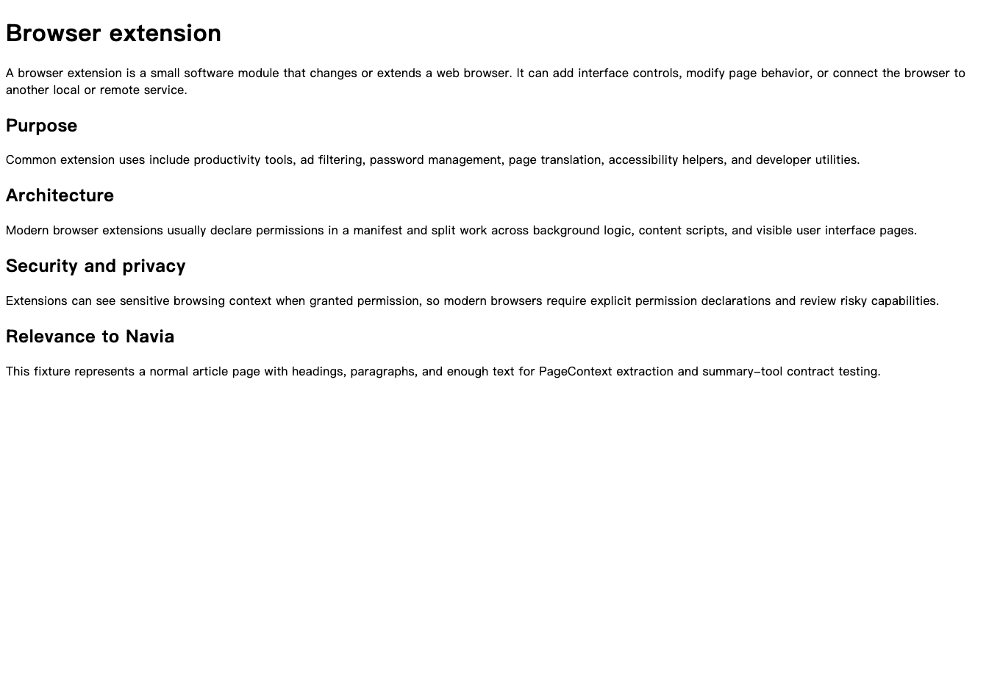
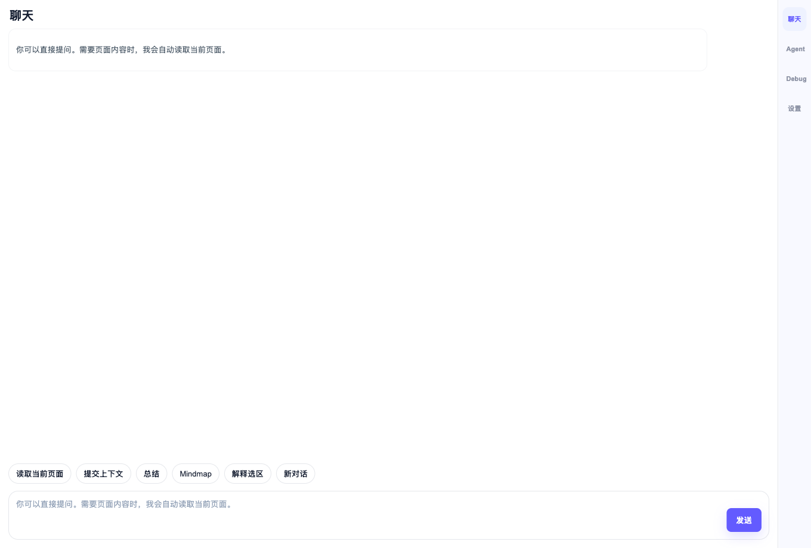
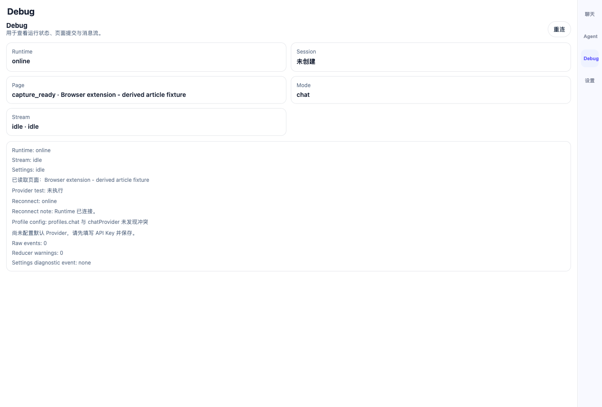
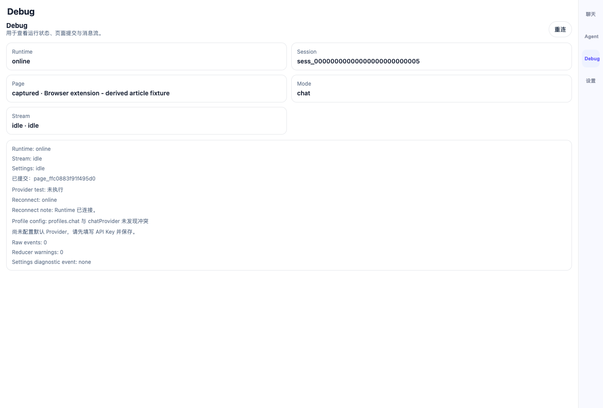
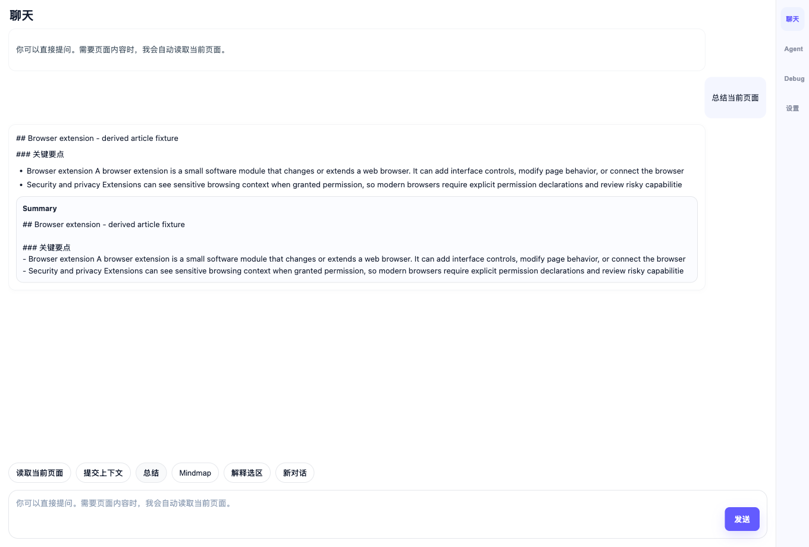
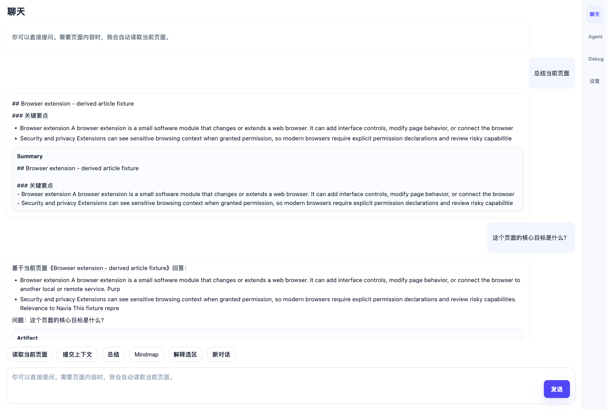
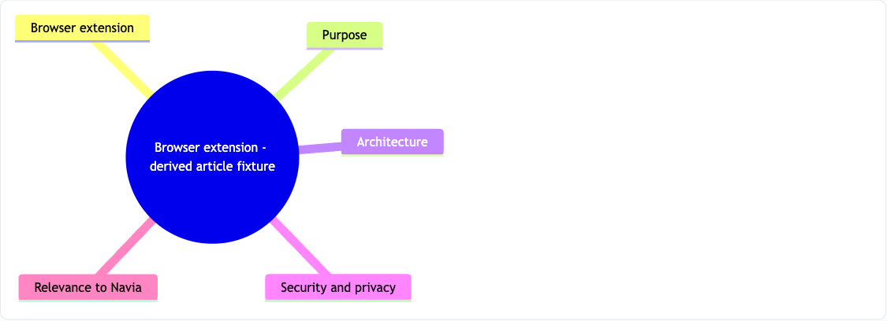
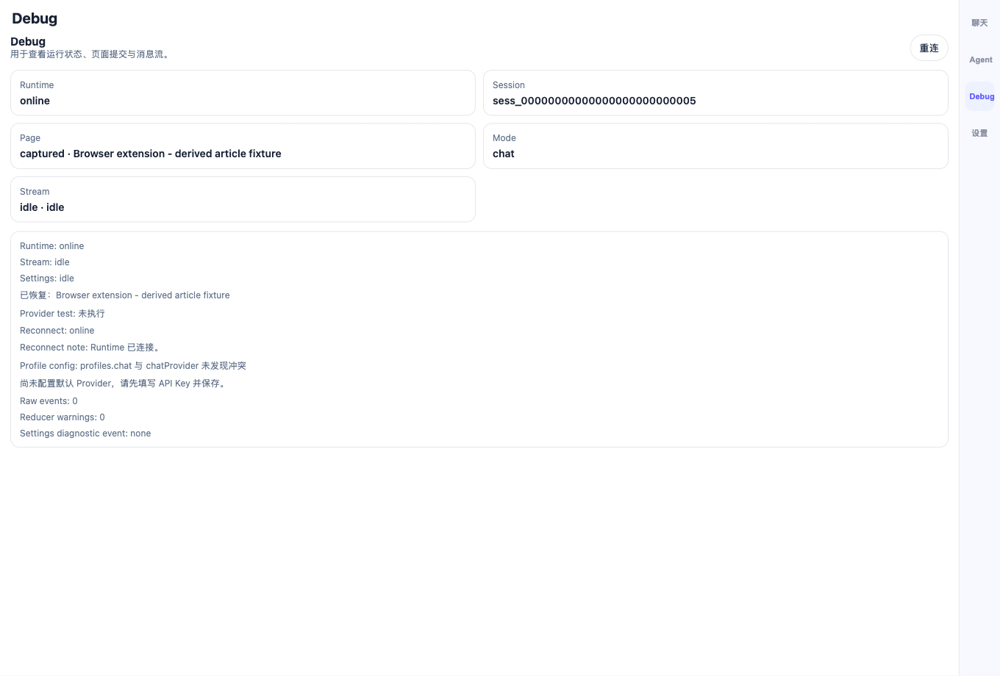

1. 真实网页快照标签页
证据说明：验收页面来自本地 HTTP 服务打开的可复现 HTML snapshot，而不是空白 mock。人类复核重点：页面标题和正文与浏览器扩展文章一致。

本报告使用当前仓库中的真实截图、真实 Runtime、真实扩展构建和真实 Chromium 自动化验收结果，说明 V1.2-AC 阶段的目标架构、当前实现架构、用户可体验路径与未覆盖范围。报告不做虚假验收，不把未验证内容描述为已完成。
A 高信号主链路与 C Mindmap 桥接。
8 张截图覆盖主要用户路径。
后端 150 passed，前端 39 passed。
不声明完整 V1.2 / V1 完成。
V1.2-AC 的目标不是重做整个 AgentCore，而是把 A/C 的能力接入已有 D Adapter / Runtime 主链路，并让 B 负责可验证呈现。
| 模块 | 目标职责 | 边界 |
|---|---|---|
| A Page Perception | 读取网页、结构化页面事实、生成高信号 digest、source map 和 quality report。 | 不生成最终回答，不生成 Mindmap，不写 Artifact / SSE / EventStore / Trace。 |
| C Mindmap | 基于 A 的 digest/source refs 生成 Mermaid 和节点来源映射。 | 不读 DOM，不绕过 D 写 Artifact 或事件。 |
| D Adapter Layer | 统一 ToolResult、Artifact、Event、Trace 映射，维持 AgentCore 边界。 | 不把 A/C 的内部实现泄漏给前端。 |
| B Renderer | 展示聊天、Debug JSON、Mermaid、source fallback 和错误状态。 | 不直接调用 A/C/D 服务，不拥有 AgentCore 状态。 |
| 架构目标 | 当前实现状态 | 证据 / 说明 |
|---|---|---|
| A perception bundle 进入 Runtime 主链路 | 已实现本阶段主链路 | /v1/page/context 返回并保存 structuredPage、highSignalPage、perceptionDigest、sourceMap、qualityReport。 |
| 旧 activePage 兼容 | 已保留 | 刷新恢复截图显示 Debug 页仍能恢复 captured activePage 状态。 |
| C digest-first Mindmap | 已接入本阶段路径 | Mindmap artifact 截图显示 Mermaid 已渲染为可视图谱；C 单测覆盖 digest/source map 路径。 |
| B Debug / Chat / Mermaid 展示 | 已覆盖核心路径 | Debug、摘要、问答、Mindmap、刷新恢复均有截图证据。 |
| 原生 Chrome Side Panel 自动化 | 未完整声明 | 本轮为真实 Chromium 扩展页面 direct extension page fallback，不把它说成原生 Side Panel 全覆盖。 |
| 100 页生产级 A 模块门槛 | 本轮未重新执行 | 本报告只覆盖 V1.2-AC 单页可视链路和自动化回归，不声明重新完成 100 页验收。 |
用户打开网页后，在 Navia 中点击「读取当前页面」，Debug 页出现页面标题和 capture_ready。
用户点击「提交上下文」，Runtime 创建 session，Debug 状态变为 captured。
用户点击「总结」，聊天区出现来自当前页面的摘要和关键要点。
用户输入问题，系统返回“基于当前页面”的回答。
用户点击「Mindmap」，系统生成 Mermaid 图谱并在前端渲染。
用户刷新扩展页面，Debug 页仍可恢复 captured 状态。
证据说明：验收页面来自本地 HTTP 服务打开的可复现 HTML snapshot，而不是空白 mock。人类复核重点：页面标题和正文与浏览器扩展文章一致。

证据说明：Navia 扩展页面可打开，主操作包括读取当前页面、提交上下文、总结、Mindmap。人类复核重点：不是 Runtime offline 或空白页面。

证据说明：点击读取页面后，Debug 显示 capture_ready 和页面标题。人类复核重点：A/B 集成已读到当前网页。

证据说明：提交上下文后，Debug 显示 captured 和已提交提示。人类复核重点：页面上下文进入 Runtime session。

证据说明：点击总结后，聊天区显示页面摘要和关键要点。人类复核重点：内容来自当前网页，不是空响应。

证据说明：用户提问“这个页面的核心目标是什么？”，系统返回基于当前页面的回答。人类复核重点：问答链路可用；本轮不评估最终语义质量上限。

证据说明：点击 Mindmap 后，前端渲染出 Mermaid 可视图谱。此图为 artifact 区域直接截图，不再使用只能看到 artifact 标题的旧截图。人类复核重点：能看到中心节点与多个分支节点。

证据说明：刷新扩展页面后，Debug 页仍显示 captured 状态。人类复核重点：不是纯 UI 临时状态，至少能从 Runtime session 恢复 activePage。

| 验收项 | 命令 / 数据 | 结果 |
|---|---|---|
| 后端 Runtime / A / C / D 回归 | PYTHONPATH=services/local-runtime python3 -m pytest -q ... |
150 passed |
| 前端单测 | pnpm --dir apps/chrome-extension test |
8 files / 39 tests passed |
| 前端类型检查 | pnpm --dir apps/chrome-extension typecheck |
通过 |
| Chrome 扩展构建 | pnpm --dir apps/chrome-extension build |
通过，存在 chunk size warning |
| 真实 Chromium 可见截图验收 | pnpm --dir apps/chrome-extension e2e:chrome:visual |
通过 |
| 空白 / 行尾检查 | git diff --check |
通过 |
result.jsonindex.htmlhuman-acceptance-report.htmldocs/active/project/evidence/v1_2_ac/visual-chrome-cli/apps/chrome-extension/e2e/chrome-sidepanel-visual-e2e.mjsdocs/active/project/stage-gates/v1.2-ac-page-perception-mindmap-bridge.md